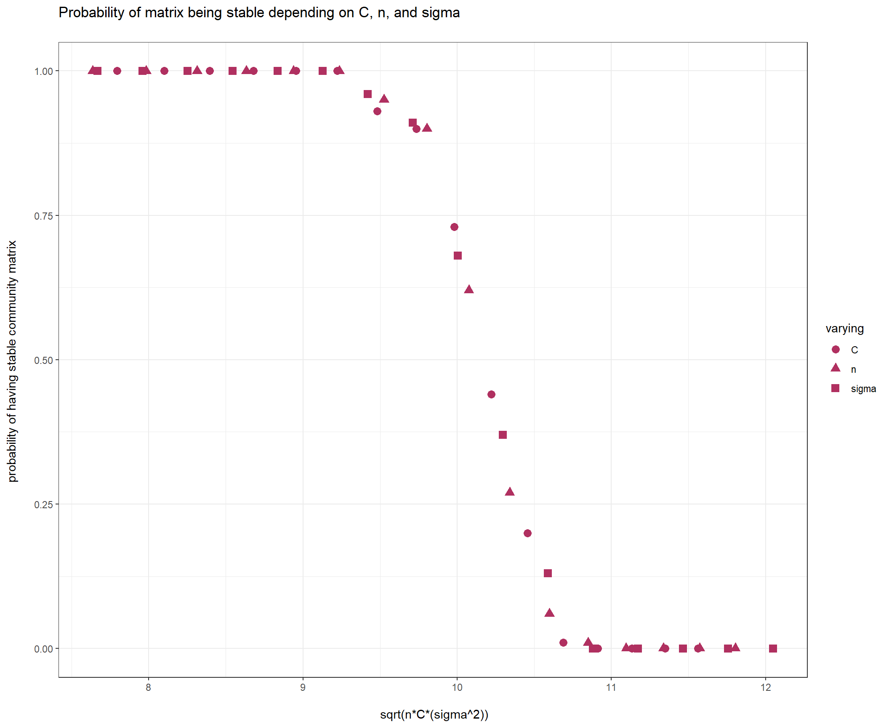
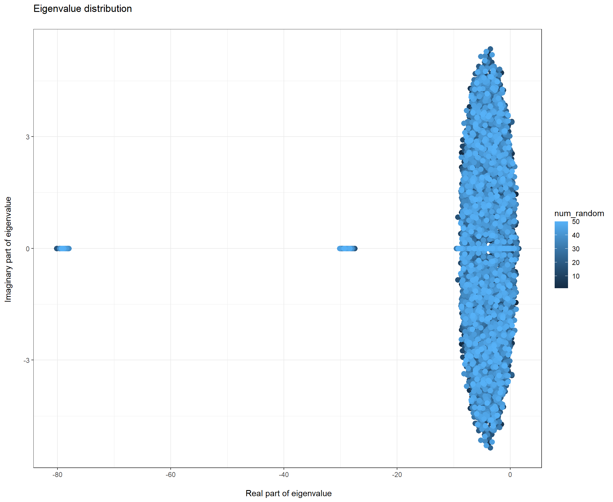

Last updated: 2021-04-28
Checks: 7 0
Knit directory: Theoretical_community_ecology_S2021/
This reproducible R Markdown analysis was created with workflowr (version 1.6.2). The Checks tab describes the reproducibility checks that were applied when the results were created. The Past versions tab lists the development history.
Great! Since the R Markdown file has been committed to the Git repository, you know the exact version of the code that produced these results.
Great job! The global environment was empty. Objects defined in the global environment can affect the analysis in your R Markdown file in unknown ways. For reproduciblity it’s best to always run the code in an empty environment.
The command set.seed(20210408) was run prior to running the code in the R Markdown file. Setting a seed ensures that any results that rely on randomness, e.g. subsampling or permutations, are reproducible.
Great job! Recording the operating system, R version, and package versions is critical for reproducibility.
Nice! There were no cached chunks for this analysis, so you can be confident that you successfully produced the results during this run.
Great job! Using relative paths to the files within your workflowr project makes it easier to run your code on other machines.
Great! You are using Git for version control. Tracking code development and connecting the code version to the results is critical for reproducibility.
The results in this page were generated with repository version 96632e6. See the Past versions tab to see a history of the changes made to the R Markdown and HTML files.
Note that you need to be careful to ensure that all relevant files for the analysis have been committed to Git prior to generating the results (you can use wflow_publish or wflow_git_commit). workflowr only checks the R Markdown file, but you know if there are other scripts or data files that it depends on. Below is the status of the Git repository when the results were generated:
Ignored files:
Ignored: .Rhistory
Ignored: .Rproj.user/
Note that any generated files, e.g. HTML, png, CSS, etc., are not included in this status report because it is ok for generated content to have uncommitted changes.
These are the previous versions of the repository in which changes were made to the R Markdown (analysis/TCE_HW4.Rmd) and HTML (docs/TCE_HW4.html) files. If you’ve configured a remote Git repository (see ?wflow_git_remote), click on the hyperlinks in the table below to view the files as they were in that past version.
| File | Version | Author | Date | Message |
|---|---|---|---|---|
| Rmd | 96632e6 | KiseokUchicago | 2021-04-28 | HW4_reinforce |
| html | 01cabb1 | KiseokUchicago | 2021-04-28 | Build site. |
| Rmd | 973280d | KiseokUchicago | 2021-04-28 | 3b |
| html | 1ab2278 | KiseokUchicago | 2021-04-28 | Build site. |
| Rmd | 015b34e | KiseokUchicago | 2021-04-28 | 4b |
| html | 0edea6e | KiseokUchicago | 2021-04-27 | Build site. |
| Rmd | 2338883 | KiseokUchicago | 2021-04-27 | HW4 |
Professor: Stefano Allesina
Student: Kiseok Lee
Consider a five-species system with symmetric, stable B (with all positive coefficients) and positive s, yielding the feasible equilibrium x*.
Stable B means B is positive definite, since f = x(s-Bx)
library(matrixcalc)
# five species system
n = 5
# randomizing s
s = runif(n)
# randomizing B
B = matrix(runif(n*n),n, n)
# symmetric
B <- B + t(B)
isSymmetric(B)[1] TRUE# x* is positive s-Bx=0 <-> Bx=s
all(solve(B, s) > 0) == T[1] FALSE# B is stable <=> real part of eigenvalues are all negative
# function
leftmost <- function(M){
eig <- eigen(M, only.values = T)$values
# print(Re(eig)) # print all real part of eigenvalues
return(min(Re(eig))) # the right most eigenvalue
}
leftmost(B) > 0[1] FALSE# This is Stefano's coding idea
set.seed(1)
success <- FALSE
while(!(success)){
# randomizing s
s = runif(n)
# randomizing B
B = matrix(runif(n*n),n, n)
# symmetric
B <- B + t(B)
if((leftmost(B) > 0) & (all(solve(B, s) > 0))){
success <- TRUE
}
}
# B and s
B [,1] [,2] [,3] [,4] [,5]
[1,] 1.9744523 0.7418885 1.2881720 1.4254116 1.0558720
[2,] 0.7418885 1.8807196 0.9155018 0.8873674 0.7540363
[3,] 1.2881720 0.9155018 1.3297575 0.9736394 1.0504064
[4,] 1.4254116 0.8873674 0.9736394 1.9846746 0.9282524
[5,] 1.0558720 0.7540363 1.0504064 0.9282524 1.8619960s[1] 0.7326756 0.6992248 0.6641963 0.7942006 0.6593070# for all species
all(solve(B, s) > 0) # feasible[1] TRUEleftmost(B) > 0 # stable [1] TRUE# for 4 species combination
c4 <- combn(1:5, 4)
for (i in 1:dim(c4)[2]){
# new species combination matrix
B_c4 <- B[c4[,i],c4[,i]]
s4 <- s[c4[,i]]
print(paste0('case',i))
print(B_c4)
print(paste0("Feasibility: ",all(solve(B_c4, s4) > 0) == T))
print(paste0("Stability: ",leftmost(B) > 0))
}[1] "case1"
[,1] [,2] [,3] [,4]
[1,] 1.9744523 0.7418885 1.2881720 1.4254116
[2,] 0.7418885 1.8807196 0.9155018 0.8873674
[3,] 1.2881720 0.9155018 1.3297575 0.9736394
[4,] 1.4254116 0.8873674 0.9736394 1.9846746
[1] "Feasibility: TRUE"
[1] "Stability: TRUE"
[1] "case2"
[,1] [,2] [,3] [,4]
[1,] 1.9744523 0.7418885 1.2881720 1.0558720
[2,] 0.7418885 1.8807196 0.9155018 0.7540363
[3,] 1.2881720 0.9155018 1.3297575 1.0504064
[4,] 1.0558720 0.7540363 1.0504064 1.8619960
[1] "Feasibility: TRUE"
[1] "Stability: TRUE"
[1] "case3"
[,1] [,2] [,3] [,4]
[1,] 1.9744523 0.7418885 1.4254116 1.0558720
[2,] 0.7418885 1.8807196 0.8873674 0.7540363
[3,] 1.4254116 0.8873674 1.9846746 0.9282524
[4,] 1.0558720 0.7540363 0.9282524 1.8619960
[1] "Feasibility: TRUE"
[1] "Stability: TRUE"
[1] "case4"
[,1] [,2] [,3] [,4]
[1,] 1.974452 1.2881720 1.4254116 1.0558720
[2,] 1.288172 1.3297575 0.9736394 1.0504064
[3,] 1.425412 0.9736394 1.9846746 0.9282524
[4,] 1.055872 1.0504064 0.9282524 1.8619960
[1] "Feasibility: FALSE"
[1] "Stability: TRUE"
[1] "case5"
[,1] [,2] [,3] [,4]
[1,] 1.8807196 0.9155018 0.8873674 0.7540363
[2,] 0.9155018 1.3297575 0.9736394 1.0504064
[3,] 0.8873674 0.9736394 1.9846746 0.9282524
[4,] 0.7540363 1.0504064 0.9282524 1.8619960
[1] "Feasibility: TRUE"
[1] "Stability: TRUE"# for 3 species combination
c3 <- combn(1:5, 3)
for (i in 1:dim(c3)[2]){
# new species combination matrix
B_c3 <- B[c3[,i],c3[,i]]
s3 <- s[c3[,i]]
print(paste0('case',i))
print(B_c3)
print(paste0("Feasibility: ",all(solve(B_c3, s3) > 0) == T))
print(paste0("Stability: ",leftmost(B) > 0))
}[1] "case1"
[,1] [,2] [,3]
[1,] 1.9744523 0.7418885 1.2881720
[2,] 0.7418885 1.8807196 0.9155018
[3,] 1.2881720 0.9155018 1.3297575
[1] "Feasibility: TRUE"
[1] "Stability: TRUE"
[1] "case2"
[,1] [,2] [,3]
[1,] 1.9744523 0.7418885 1.4254116
[2,] 0.7418885 1.8807196 0.8873674
[3,] 1.4254116 0.8873674 1.9846746
[1] "Feasibility: TRUE"
[1] "Stability: TRUE"
[1] "case3"
[,1] [,2] [,3]
[1,] 1.9744523 0.7418885 1.0558720
[2,] 0.7418885 1.8807196 0.7540363
[3,] 1.0558720 0.7540363 1.8619960
[1] "Feasibility: TRUE"
[1] "Stability: TRUE"
[1] "case4"
[,1] [,2] [,3]
[1,] 1.974452 1.2881720 1.4254116
[2,] 1.288172 1.3297575 0.9736394
[3,] 1.425412 0.9736394 1.9846746
[1] "Feasibility: FALSE"
[1] "Stability: TRUE"
[1] "case5"
[,1] [,2] [,3]
[1,] 1.974452 1.288172 1.055872
[2,] 1.288172 1.329758 1.050406
[3,] 1.055872 1.050406 1.861996
[1] "Feasibility: TRUE"
[1] "Stability: TRUE"
[1] "case6"
[,1] [,2] [,3]
[1,] 1.974452 1.4254116 1.0558720
[2,] 1.425412 1.9846746 0.9282524
[3,] 1.055872 0.9282524 1.8619960
[1] "Feasibility: TRUE"
[1] "Stability: TRUE"
[1] "case7"
[,1] [,2] [,3]
[1,] 1.8807196 0.9155018 0.8873674
[2,] 0.9155018 1.3297575 0.9736394
[3,] 0.8873674 0.9736394 1.9846746
[1] "Feasibility: TRUE"
[1] "Stability: TRUE"
[1] "case8"
[,1] [,2] [,3]
[1,] 1.8807196 0.9155018 0.7540363
[2,] 0.9155018 1.3297575 1.0504064
[3,] 0.7540363 1.0504064 1.8619960
[1] "Feasibility: TRUE"
[1] "Stability: TRUE"
[1] "case9"
[,1] [,2] [,3]
[1,] 1.8807196 0.8873674 0.7540363
[2,] 0.8873674 1.9846746 0.9282524
[3,] 0.7540363 0.9282524 1.8619960
[1] "Feasibility: TRUE"
[1] "Stability: TRUE"
[1] "case10"
[,1] [,2] [,3]
[1,] 1.3297575 0.9736394 1.0504064
[2,] 0.9736394 1.9846746 0.9282524
[3,] 1.0504064 0.9282524 1.8619960
[1] "Feasibility: TRUE"
[1] "Stability: TRUE"# for 2 species combination
c2 <- combn(1:5, 2)
for (i in 1:dim(c2)[2]){
# new species combination matrix
B_c2 <- B[c2[,i],c2[,i]]
s2 <- s[c2[,i]]
print(paste0('case',i))
print(B_c2)
print(paste0("Feasibility: ",all(solve(B_c2, s2) > 0) == T))
print(paste0("Stability: ",leftmost(B) > 0))
}[1] "case1"
[,1] [,2]
[1,] 1.9744523 0.7418885
[2,] 0.7418885 1.8807196
[1] "Feasibility: TRUE"
[1] "Stability: TRUE"
[1] "case2"
[,1] [,2]
[1,] 1.974452 1.288172
[2,] 1.288172 1.329758
[1] "Feasibility: TRUE"
[1] "Stability: TRUE"
[1] "case3"
[,1] [,2]
[1,] 1.974452 1.425412
[2,] 1.425412 1.984675
[1] "Feasibility: TRUE"
[1] "Stability: TRUE"
[1] "case4"
[,1] [,2]
[1,] 1.974452 1.055872
[2,] 1.055872 1.861996
[1] "Feasibility: TRUE"
[1] "Stability: TRUE"
[1] "case5"
[,1] [,2]
[1,] 1.8807196 0.9155018
[2,] 0.9155018 1.3297575
[1] "Feasibility: TRUE"
[1] "Stability: TRUE"
[1] "case6"
[,1] [,2]
[1,] 1.8807196 0.8873674
[2,] 0.8873674 1.9846746
[1] "Feasibility: TRUE"
[1] "Stability: TRUE"
[1] "case7"
[,1] [,2]
[1,] 1.8807196 0.7540363
[2,] 0.7540363 1.8619960
[1] "Feasibility: TRUE"
[1] "Stability: TRUE"
[1] "case8"
[,1] [,2]
[1,] 1.3297575 0.9736394
[2,] 0.9736394 1.9846746
[1] "Feasibility: TRUE"
[1] "Stability: TRUE"
[1] "case9"
[,1] [,2]
[1,] 1.329758 1.050406
[2,] 1.050406 1.861996
[1] "Feasibility: TRUE"
[1] "Stability: TRUE"
[1] "case10"
[,1] [,2]
[1,] 1.9846746 0.9282524
[2,] 0.9282524 1.8619960
[1] "Feasibility: TRUE"
[1] "Stability: TRUE"# for 1 species combination
c1 <- combn(1:5, 1)
for (i in 1:dim(c1)[2]){
# new species combination matrix
B_c1 <- B[c1[,i],c1[,i]]
s1 <- s[c1[,i]]
print(paste0('case',i))
print(B_c1)
print(paste0("Feasibility: ",all(solve(B_c1, s1) > 0) == T))
print(paste0("Stability: ",leftmost(B) > 0))
}[1] "case1"
[1] 1.974452
[1] "Feasibility: TRUE"
[1] "Stability: TRUE"
[1] "case2"
[1] 1.88072
[1] "Feasibility: TRUE"
[1] "Stability: TRUE"
[1] "case3"
[1] 1.329758
[1] "Feasibility: TRUE"
[1] "Stability: TRUE"
[1] "case4"
[1] 1.984675
[1] "Feasibility: TRUE"
[1] "Stability: TRUE"
[1] "case5"
[1] 1.861996
[1] "Feasibility: TRUE"
[1] "Stability: TRUE"Stefano’s method is more elegant. I will adopt it here.
feasible_list <- list()
for (subset in 1:(2^n-1)){
presence_vector <- as.numeric(intToBits(subset)[1:n])
s_subset <- s[presence_vector>0]
B_subset <- B[presence_vector>0,presence_vector>0]
x_star <- rep(0,n)
x_star[presence_vector>0] <- solve(B_subset,s_subset)
if((leftmost(B_subset) > 0) & (all(solve(B_subset, s_subset) > 0))){
feasible_list[[length(feasible_list)+1]] <- list(
community = subset,
presence = presence_vector,
xstar = x_star
)
}
}
feasible_list[[1]]
[[1]]$community
[1] 1
[[1]]$presence
[1] 1 0 0 0 0
[[1]]$xstar
[1] 0.3710779 0.0000000 0.0000000 0.0000000 0.0000000
[[2]]
[[2]]$community
[1] 2
[[2]]$presence
[1] 0 1 0 0 0
[[2]]$xstar
[1] 0.0000000 0.3717858 0.0000000 0.0000000 0.0000000
[[3]]
[[3]]$community
[1] 3
[[3]]$presence
[1] 1 1 0 0 0
[[3]]$xstar
[1] 0.2716448 0.2646299 0.0000000 0.0000000 0.0000000
[[4]]
[[4]]$community
[1] 4
[[4]]$presence
[1] 0 0 1 0 0
[[4]]$xstar
[1] 0.0000000 0.0000000 0.4994868 0.0000000 0.0000000
[[5]]
[[5]]$community
[1] 5
[[5]]$presence
[1] 1 0 1 0 0
[[5]]$xstar
[1] 0.1228392 0.0000000 0.3804891 0.0000000 0.0000000
[[6]]
[[6]]$community
[1] 6
[[6]]$presence
[1] 0 1 1 0 0
[[6]]$xstar
[1] 0.0000000 0.1934897 0.3662744 0.0000000 0.0000000
[[7]]
[[7]]$community
[1] 7
[[7]]$presence
[1] 1 1 1 0 0
[[7]]$xstar
[1] 0.1652731 0.2126527 0.1929768 0.0000000 0.0000000
[[8]]
[[8]]$community
[1] 8
[[8]]$presence
[1] 0 0 0 1 0
[[8]]$xstar
[1] 0.0000000 0.0000000 0.0000000 0.4001667 0.0000000
[[9]]
[[9]]$community
[1] 9
[[9]]$presence
[1] 1 0 0 1 0
[[9]]$xstar
[1] 0.1706868 0.0000000 0.0000000 0.2775778 0.0000000
[[10]]
[[10]]$community
[1] 10
[[10]]$presence
[1] 0 1 0 1 0
[[10]]$xstar
[1] 0.0000000 0.2318983 0.0000000 0.2964826 0.0000000
[[11]]
[[11]]$community
[1] 11
[[11]]$presence
[1] 1 1 0 1 0
[[11]]$xstar
[1] 0.1463133 0.2215879 0.0000000 0.1960090 0.0000000
[[12]]
[[12]]$community
[1] 12
[[12]]$presence
[1] 0 0 1 1 0
[[12]]$xstar
[1] 0.0000000 0.0000000 0.3222331 0.2420859 0.0000000
[[13]]
[[13]]$community
[1] 14
[[13]]$presence
[1] 0 1 1 1 0
[[13]]$xstar
[1] 0.0000000 0.1560933 0.2342720 0.2154469 0.0000000
[[14]]
[[14]]$community
[1] 15
[[14]]$presence
[1] 1 1 1 1 0
[[14]]$xstar
[1] 0.01594045 0.15907913 0.22157301 0.20889321 0.00000000
[[15]]
[[15]]$community
[1] 16
[[15]]$presence
[1] 0 0 0 0 1
[[15]]$xstar
[1] 0.0000000 0.0000000 0.0000000 0.0000000 0.3540861
[[16]]
[[16]]$community
[1] 17
[[16]]$presence
[1] 1 0 0 0 1
[[16]]$xstar
[1] 0.2608161 0.0000000 0.0000000 0.0000000 0.2061866
[[17]]
[[17]]$community
[1] 18
[[17]]$presence
[1] 0 1 0 0 1
[[17]]$xstar
[1] 0.0000000 0.2743689 0.0000000 0.0000000 0.2429773
[[18]]
[[18]]$community
[1] 19
[[18]]$presence
[1] 1 1 0 0 1
[[18]]$xstar
[1] 0.2075947 0.2329517 0.0000000 0.0000000 0.1420301
[[19]]
[[19]]$community
[1] 20
[[19]]$presence
[1] 0 0 1 0 1
[[19]]$xstar
[1] 0.0000000 0.0000000 0.3964527 0.0000000 0.1304356
[[20]]
[[20]]$community
[1] 21
[[20]]$presence
[1] 1 0 1 0 1
[[20]]$xstar
[1] 0.1161882 0.0000000 0.2873047 0.0000000 0.1261230
[[21]]
[[21]]$community
[1] 22
[[21]]$presence
[1] 0 1 1 0 1
[[21]]$xstar
[1] 0.0000000 0.1904111 0.2698565 0.0000000 0.1247431
[[22]]
[[22]]$community
[1] 23
[[22]]$presence
[1] 1 1 1 0 1
[[22]]$xstar
[1] 0.1582896 0.2089230 0.1088504 0.0000000 0.1183143
[[23]]
[[23]]$community
[1] 24
[[23]]$presence
[1] 0 0 0 1 1
[[23]]$xstar
[1] 0.0000000 0.0000000 0.0000000 0.3058769 0.2015987
[[24]]
[[24]]$community
[1] 25
[[24]]$presence
[1] 1 0 0 1 1
[[24]]$xstar
[1] 0.09923066 0.00000000 0.00000000 0.24725899 0.17455105
[[25]]
[[25]]$community
[1] 26
[[25]]$presence
[1] 0 1 0 1 1
[[25]]$xstar
[1] 0.0000000 0.1965021 0.0000000 0.2398397 0.1549442
[[26]]
[[26]]$community
[1] 27
[[26]]$presence
[1] 1 1 0 1 1
[[26]]$xstar
[1] 0.09641156 0.19566613 0.00000000 0.18316802 0.12886343
[[27]]
[[27]]$community
[1] 28
[[27]]$presence
[1] 0 0 1 1 1
[[27]]$xstar
[1] 0.0000000 0.0000000 0.2559349 0.2302046 0.0949429
[[28]]
[[28]]$community
[1] 30
[[28]]$presence
[1] 0 1 1 1 1
[[28]]$xstar
[1] 0.00000000 0.15580561 0.16853348 0.20368601 0.09437357
[[29]]
[[29]]$community
[1] 31
[[29]]$presence
[1] 1 1 1 1 1
[[29]]$xstar
[1] 0.01997656 0.15954614 0.15232577 0.19542046 0.09479464# subset1
s1_xstar <- feasible_list[[22]]$xstar
# subset2
s2_xstar <- feasible_list[[20]]$xstar
# solve the system
library(deSolve)
GLV <- function(t, x, pars){
with(as.list(c(x, pars)), {
dx <- diag(x) %*% (s - B %*% x)
return(list(dx))
})
}
# parameters
para <- list(s = s, B = B)
# initial conditions
x0 <- s2_xstar
x0[2] <- 10^(-6)
# integrate
ode(y=x0, times = c(0,1000), func = GLV, parms=para, method = "ode45") time 1 2 3 4 5
1 0 0.1161882 0.0000010 0.2873047 0 0.126123
2 1000 0.1582891 0.2089224 0.1088501 0 0.118314# invasion success# define matrix M and A
# M = A * x
n = 5
M = matrix(runif(n*n, 0, 1),n, n)
# function
rightmost <- function(M){
eig <- eigen(M, only.values = T)$values
# print(Re(eig)) # print all real part of eigenvalues
return(max(Re(eig))) # the right most eigenvalue
}
rightmost(M)[1] 2.362142May’s matrix: Mij = 0 with probability (1-C); with probability C we draw Mij from a distribution with mean zero and variance σ^2. C is the proportion of realized connections, termed the “connectance” of the system.
the diagonal elements are set to −d, modeling self-regulation.
n = 5
sigma = 1
C = 0.3 # connectance
d = 10
# May matrix generating function
may_matrix <- function(sigma, C, n, d){
M = matrix(rnorm(n*n, mean=0, sd=sigma),n, n)
# then make elements 0 with probability of 1-C
M_prob <- matrix(rbinom(n*n, size=1, prob=C),n, n)
# apply probability
May_M <- M * M_prob
diag(May_M) <- -d
return(May_M)
}
may_matrix(sigma, C, n, d) [,1] [,2] [,3] [,4] [,5]
[1,] -10.0000000 0.00000000 0.0000000 0 0.0000000
[2,] 0.0000000 -10.00000000 0.0000000 0 0.0000000
[3,] -0.6770691 0.00000000 -10.0000000 0 -0.7443596
[4,] -0.6194503 0.04246906 0.0000000 -10 0.0000000
[5,] 0.0000000 0.00000000 -0.6171188 0 -10.0000000d = 10
n = 300
C = 0.4
sigma=0.9
# stability condition
sqrt(n*C*(sigma^2)) # 9.859006[1] 9.859006d # 10[1] 10sqrt(n*C*(sigma^2)) < d # True[1] TRUE# generate 1000 random matrices
num_random = 1000
stable_list = rep(-1,num_random) # vector that stores information of stable (true=1) vs unstable (false=0)
for (i in 1:num_random){
m <- may_matrix(sigma, C, n, d)
# print(rightmost(m))
stable_list[i] <- rightmost(m)<0
}
# probability drawing a stable matrix
sum(stable_list)/num_random[1] 0.781# function for calculating stability
prob_stability <- function(num_random=1000, sigma, C, n, d=10){
stable_list = rep(-1,num_random) # vector that stores information of stable (true=1) vs unstable (false=0)
for (i in 1:num_random){
m <- may_matrix(sigma, C, n, d)
# print(rightmost(m))
stable_list[i] <- rightmost(m)<0
}
return(sum(stable_list)/num_random)
}
# creating dataframe for changing values
# (1) changing C from 0.3 to 0.5. n = 300, sigma=0.9
vec_C <- seq(0.25, 0.55, length.out=16)
n = 300; sigma=0.9
# x axis
sqrt(n*vec_C*(sigma^2)) [1] 7.794229 8.100000 8.394641 8.679286 8.954887 9.222256 9.482088
[8] 9.734988 9.981483 10.222035 10.457055 10.686908 10.911920 11.132385
[15] 11.348568 11.560709# y axis
vec_prob1 <- rep(-1,length(vec_C))
for (i in 1:length(vec_C)){
vec_prob1[i] <- prob_stability(num_random=100, sigma=0.9, C=vec_C[i], n = 300, d=10)
}
# (2) Changing sigma from 0.7 to 1.1 & n = 300; C = 0.4
vec_sigma <- seq(0.7, 1.1, length.out=16)
n = 300; C = 0.4
# x axis
sqrt(n*C*(vec_sigma^2)) [1] 7.668116 7.960235 8.252353 8.544472 8.836591 9.128709 9.420828
[8] 9.712947 10.005065 10.297184 10.589303 10.881421 11.173540 11.465659
[15] 11.757778 12.049896# y axis
vec_prob2 <- rep(-1,length(vec_sigma))
for (i in 1:length(vec_sigma)){
vec_prob2[i] <- prob_stability(num_random=100, sigma=vec_sigma[i], C=0.4, n = 300, d=10)
}
# (3) changing n from 180 to 430 & C = 0.4; sigma=0.9
vec_n <- seq(180, 430, length.out=16)
C = 0.4; sigma=0.9
# x axis
sqrt(vec_n*C*(sigma^2)) [1] 7.636753 7.982481 8.313844 8.632497 8.939799 9.236883 9.524705
[8] 9.804081 10.075713 10.340213 10.598113 10.849885 11.095945 11.336666
[15] 11.572381 11.803389# y axis
vec_prob3 <- rep(-1,length(vec_n))
for (i in 1:length(vec_n)){
vec_prob3[i] <- prob_stability(num_random=100, sigma=0.9, C=0.4, n = vec_n[i], d=10)
}
## bind the results into single dataframe
df1 <- data.frame(x=sqrt(n*vec_C*(sigma^2)),y=vec_prob1,varying="C")
df2 <- data.frame(x=sqrt(n*C*(vec_sigma^2)),y=vec_prob2,varying="sigma")
df3 <- data.frame(x=sqrt(vec_n*C*(sigma^2)),y=vec_prob3,varying="n")
df_merge <- rbind(df1, df2, df3)
library(ggplot2)
# plot
ggplot(df_merge,aes(x = x,y = y)) + geom_point(aes(shape=varying), size=3, color='maroon') + theme_bw() +
labs(title="Probability of matrix being stable depending on C, n, and sigma \n", x="\n sqrt(n*C*(sigma^2))",y="probability of having stable community matrix \n")
Study the spectrum of the community matrix of a competitive community in which species are divided into two groups (e.g., benthic, pelagic), and interactions are as follow:
Community matrix conditions: 1. Mii (diagonal) = -5
2. Mij when species i and j is in the same group, Mij ~ N(mu1, sigma^2)
3. Mij when species i and j is in the different group, Mij ~ N(mu2, sigma^2)
4. There are only two groups and the number of species in each group is the same.
# parameters setting
n = 10
sigma = 1/2
mu1 = -1 # connectance
mu2 = -1/2
# Matrix generating function
# let's say everytime we cluster the species in the same group together in the matrix.
# so that we can make structured matrix.
twogroup_matrix <- function(sigma=0.5, n, mu1=-1,mu2=-0.5){
M = matrix(rep(0,n*n),n,n)
for (i in 1:n){
for (j in 1:n){
if(i != j){
# print(paste0(i,',',j))
# group 1 is species {1, 2, ..., n/2}
# group 2 is species {(n/2)+1, ..., n}
if ((i<= n/2 & j<= n/2) | (i> n/2 & j> n/2)){ # for i and j in the same group
M[i,j] <- rnorm(1, mean=mu1, sd=sigma)
# print(M[i,j]) # testing
} else{ # # for i and j in the different group
M[i,j] <- rnorm(1, mean=mu2, sd=sigma)
# print(M[i,j]) # testing
}
}
}
}
diag(M) <- -5
return(M)
}
twogroup_matrix(sigma=0.5, n=10, mu1=-1,mu2=-0.5) [,1] [,2] [,3] [,4] [,5] [,6]
[1,] -5.00000000 -0.5655608 -0.58616875 -1.8781492 -1.29262068 0.06770113
[2,] -0.77340526 -5.0000000 -0.63751248 -1.2539321 -0.59680512 0.59484718
[3,] -0.77933768 -0.4856261 -5.00000000 -1.0425433 -1.33127509 0.04787932
[4,] -1.67472999 -0.8082416 -1.35803766 -5.0000000 -0.72271452 -1.20720319
[5,] -1.07297177 -1.8861318 -1.21925050 -0.6939603 -5.00000000 -0.97769027
[6,] -0.24927993 -1.0967013 -1.05007047 -0.6636027 -0.56242778 -5.00000000
[7,] -1.12115533 0.3782530 -0.20417615 -1.0466200 0.07125919 -0.86720943
[8,] -0.66785190 -0.8745348 -0.07147704 -0.2000239 -1.24851285 -1.05183569
[9,] -1.16173839 -0.7532760 0.38849989 -1.5025023 -0.28492842 -2.03347925
[10,] -0.07922365 -0.6230564 -1.57241877 -0.9559554 -0.56790177 0.19865789
[,7] [,8] [,9] [,10]
[1,] -0.6087177 -0.42856497 -0.79917885 -0.4704438
[2,] 0.1275293 -0.38659754 -0.04634418 -0.8106420
[3,] -0.2990330 -1.03456864 0.09255580 -0.6154669
[4,] -0.1057289 -0.32440478 -0.47852758 -0.9998084
[5,] -0.5073883 -1.18462321 -1.62957984 0.3256606
[6,] -0.3016381 -1.12302666 -1.43467546 -0.5066594
[7,] -5.0000000 -0.82211861 -1.83527533 -0.8028315
[8,] -1.0517781 -5.00000000 -1.35605931 -1.1040260
[9,] -0.2284242 -1.29847486 -5.00000000 -0.5784941
[10,] -1.3963455 0.05708353 -0.70668849 -5.0000000eig <- eigen(twogroup_matrix(sigma=0.5, n=1000, mu1=-1,mu2=-0.5), only.values = T)$values
df_eig <- data.frame(Real_lambda = Re(eig), Im_lambda = Im(eig))
ggplot(df_eig,aes(x = Real_lambda,y = Im_lambda)) + geom_point(size=3, color='maroon') + theme_bw() +
scale_x_continuous(limits = c(min(Re(eig)), abs(min(Re(eig)))))+
labs(title="Eigenvalue distribution \n", x="\n Real part of eigenvalue",y="Imaginary part of eigenvalue \n")n_random = 50
df_eig <- data.frame(Real_lambda = NULL, Im_lambda = NULL, num_random=NULL)
for (i in 1:n_random){
# 100 species commuity matrix's eigen value
eig <- eigen(twogroup_matrix(sigma=0.5, n=100, mu1=-1,mu2=-0.5), only.values = T)$values
df_eig_add <- data.frame(Real_lambda = Re(eig), Im_lambda = Im(eig), num_random=i)
df_eig <- rbind(df_eig, df_eig_add)
}
ggplot(df_eig,aes(x = Real_lambda,y = Im_lambda)) + geom_point(size=3, aes(color=num_random)) + theme_bw() +
labs(title="Eigenvalue distribution \n", x="\n Real part of eigenvalue",y="Imaginary part of eigenvalue \n")
df_leftmost <- data.frame(n_species = NULL, leftmost_re_eig =NULL)
# from 10 species to 1000 species (only even number of species can devide into 2 groups)
for (n_species in seq(10,500,by=10)){
# 10 randomization
n_rand = 10
min_re_eig = rep(0,n_rand)
for (i in (1:n_rand)){
eig_val <- eigen(twogroup_matrix(sigma=0.5, n=n_species, mu1=-1,mu2=-0.5), only.values = T)$values
min_re_eig[i] <- min(Re(eig_val))
}
df_leftmost_add <- data.frame(n_species = rep(n_species,n_rand), leftmost_re_eig = min_re_eig)
df_leftmost <- rbind(df_leftmost, df_leftmost_add)
}
# plot
ggplot(df_leftmost,aes(x = n_species,y = leftmost_re_eig)) + geom_point(size=1, shape=1) + theme_bw() +
geom_smooth(method='lm', formula= y~x, size=0.1, color = 'red')+
labs(title="Left most eigenvalue's real part changes with matrix size \n", x="\n Number of species (community matrix size)",y="Left most real part of eigenvaluee \n")
sessionInfo()R version 4.0.3 (2020-10-10)
Platform: x86_64-w64-mingw32/x64 (64-bit)
Running under: Windows 10 x64 (build 19042)
Matrix products: default
locale:
[1] LC_COLLATE=English_United States.1252
[2] LC_CTYPE=English_United States.1252
[3] LC_MONETARY=English_United States.1252
[4] LC_NUMERIC=C
[5] LC_TIME=English_United States.1252
attached base packages:
[1] stats graphics grDevices utils datasets methods base
other attached packages:
[1] ggplot2_3.3.3 deSolve_1.28 matrixcalc_1.0-3 workflowr_1.6.2
loaded via a namespace (and not attached):
[1] tidyselect_1.1.0 xfun_0.20 bslib_0.2.4 purrr_0.3.4
[5] splines_4.0.3 lattice_0.20-41 colorspace_2.0-0 vctrs_0.3.6
[9] generics_0.1.0 htmltools_0.5.1.1 yaml_2.2.1 mgcv_1.8-33
[13] utf8_1.1.4 rlang_0.4.10 jquerylib_0.1.3 later_1.1.0.1
[17] pillar_1.5.1 glue_1.4.2 withr_2.4.1 DBI_1.1.1
[21] lifecycle_1.0.0 stringr_1.4.0 munsell_0.5.0 gtable_0.3.0
[25] evaluate_0.14 labeling_0.4.2 knitr_1.31 httpuv_1.5.4
[29] fansi_0.4.2 highr_0.8 Rcpp_1.0.5 promises_1.1.1
[33] scales_1.1.1 jsonlite_1.7.2 farver_2.1.0 fs_1.5.0
[37] digest_0.6.27 stringi_1.5.3 dplyr_1.0.4 grid_4.0.3
[41] rprojroot_2.0.2 tools_4.0.3 magrittr_2.0.1 sass_0.3.1
[45] tibble_3.0.4 crayon_1.4.1 whisker_0.4 pkgconfig_2.0.3
[49] ellipsis_0.3.1 Matrix_1.2-18 assertthat_0.2.1 rmarkdown_2.7
[53] R6_2.5.0 nlme_3.1-149 git2r_0.28.0 compiler_4.0.3